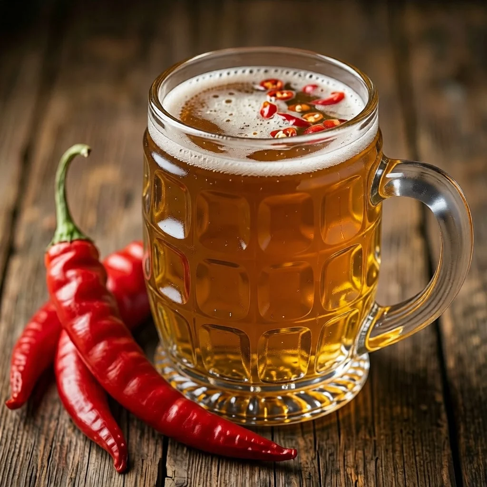

ДАЙДЖЕСТ / BODREEVSHOW
Пиво с перцем

Пиво с перцем: острота в бокале — от халапеньо до чили
Если вы уже собирали травяные эли со зверобоем и чабрецом, балансировали соль и кислинку в гозе или выводили пряный характер имбирного пива , то перчёное пиво станет для вас следующим шагом в освоении «острых» контрастов. Тут тоже всё про управление интенсивностью: не просто «жгуче», а чётко дозированная острота, которая дружит с солодом, хмелем и карбонизацией.
Откуда берётся жгучесть и как её измерять
За остроту отвечает капсаицин (и родственные капсаициноиды). Его концентрацию измеряют в единицах шкалы Сковилла (SHU). Для пивоварения это не сухая теория, а рабочий инструмент: вы заранее понимаете, насколько «горячим» получится профиль.
Ориентиры по популярным перцам:
Болгарский перец — 0 SHU (нулевая острота, зато даёт сочный «перечный» аромат).
Халапеньо — 2 500–8 000 SHU (мягкая, «сочная» острота; отлично заходит в лёгкие эли).
Серрано — 10 000–23 000 SHU (уже ощутимо, но без агрессии).
Кайенский перец — 30 000–50 000 SHU (яркая, стойкая острота).
Хабанеро — 100 000–350 000 SHU (очень интенсивно; лучше использовать микродозами).
Каролинский жнец / Trinidad Scorpion — от 1 млн SHU (для экстремалов; в домашнем пивоварении чаще используют настой/экстракт, а не целые плоды).
Важный нюанс: острота проявляется не сразу. Есть «первая волна» на кончике языка и «вторая» — глубинная, на нёбе и в горле. Пиво с перцем почти всегда даёт эффект «нарастания» жгучести с каждым глотком.
Какой стиль выбрать под перец
Перец не универсален: он по-разному раскрывается в разных базах.
Светлый IPA. Хмелевая цитрусовость и лёгкая солодовая сладость хорошо дружат с халапеньо и серрано. Острота подчёркивает тропические ноты хмеля.
Пшеничное пиво (витбир/вайцен). Мягкая пшеница и бананово‑гвоздичные эфиры сглаживают резкость перца. Кайенский здесь может звучать неожиданно чисто.
Гозе. Соль, кислинка и перец — мощная тройка. Халапеньо даёт «свежую» остроту, кайенский — минеральную «подсветку».
Портер/стаут. Тёмный солод даёт «землистую» опору, на которой перец звучит не как «добавка», а как часть тела. Хабанеро в стауте может давать лёгкий копчёный оттенок.
Сэзон. Ферментационные эфиры и сухость делают сэзон идеальной базой для перца: острота не «вязнет», а остаётся подвижной.
Формы перца и как ими управлять
Свежие стручки. Дают сочный аромат и умеренную остроту. Капсаицин содержится в плаценте (белой губчатой ткани) и семенах. Хотите мягче — уберите плаценту и семена, оставьте только мякоть.
Сушёные стручки. Более концентрированный аромат, «сухая» острота. Хорошо подходят для настоев.
Хлопья/молотый перец. Удобны для дозировки, но легко «перебрать». Молотый перец может давать мутность.
Экстракт капсаицина. Самый точный инструмент. Капля-две даёт заметную остроту без лишней взвеси и аромата. Подходит для тонкой доводки.
Перцовое пюре/соус. Удобно для фруктово‑перчёных миксов (например, томат + халапеньо). Выбирайте без лишних консервантов и сахара.
Когда и как вносить перец
Выбор времени влияет на баланс аромата и остроты.
На варке (за 10–15 минут до конца). Даёт более «встроенную» остроту и лёгкий перечный аромат. Подходит для сухих стилей (сэзон, IPA).
На сухое внесение в ферментер (2–5 дней). Сохраняет аромат, острота получается подвижной и «живой». Перец лучше класть в мешочке, чтобы контролировать экстракцию.
При розливе (в бутылки/кег). Самый безопасный вариант для экспериментов: делаете мини‑настой на нейтральном пиве и смешиваете.
Экстракт на вторичное брожение. Точная регулировка остроты без взвесей.
Общее правило: лучше недодать, чем переборщить. Сделайте мини‑тест на 0,5–1 л нейтрального пива с разными дозировками, прежде чем масштабировать на всю партию.
Тёмное и копчёное: стаут с хабанеро
Для любителей контрастов: тёмный солод и интенсивная острота.
База: овсяный стаут (овсянка сгладит резкость).
Перец: 1 маленький хабанеро (мякоть без плаценты), либо 0,2–0,3 мл экстракта капсаицина на 20 л.
Внесение: на сухое внесение 2–3 дня в мешочке.
Нюанс: хабанеро даёт не только остроту, но и лёгкий фруктовый/дымовый тон, который в стауте звучит органично.
Важные нюансы и частые ошибки
Перебор с плацентой и семенами. Именно там максимум капсаицина. Если вы хотите аромат без «пожара», убирайте белую ткань и семена.
Слишком долгое сухое внесение. Перец может давать «зелёный» или «травяной» привкус. Оптимально 2–5 дней, затем обязательно снять с добавки.
Мутность. Молотый перец и пюре дают сильную взвесь. Если нужна прозрачность, используйте экстракт или ограничьтесь мякотью в мешочке.
Конфликт вкусов. В пиве с перцем не стоит перегружать профиль сладкими/тяжёлыми добавками (карамель, много лактозы). Острота лучше всего раскрывается на фоне чистоты и карбонизации.
Безопасность. Работайте с острыми перцами в перчатках. Капсаицин плохо смывается водой, лучше использовать растительное масло или спиртовую салфетку.
Удачные сочетания (в духе ваших прошлых экспериментов)
Томатно‑перчёный гозе. Томат даёт кислотность и «мясистость», халапеньо — свежесть, соль — минеральность. Это прямой мост к вашим опытам с томатным гозе, только с новым акцентом.
Фруктово‑перчёный сэзон. Лёгкая острота подчёркивает фруктовую кислотность. Например, малина + халапеньо: сладость малины смягчает остроту, а перец «подсвечивает» аромат.
Хмелево‑перчёный IPA. Citra/Mosaic дают цитрус и тропики, халапеньо добавляет «сочности». Это похоже на то, как вы собирали имбирно‑хмелевой профиль: контраст пряности и яркой фруктовости.
Травяно‑перчёный эль. Чабрец или лемонграсс вместе с халапеньо дают «чистый», свежий профиль. Здесь та же логика, что и в травяных элях: травы собирают аромат, перец даёт динамику.
Мини тест, чтобы найти свой уровень остроты
Сделайте 4 бутылки по 0,75 л на базе нейтрального светлого пива (плотность ~1.048):
Контроль (без перца).
Халапеньо 15 г/0,75 л (мякоть без семян) на 3 дня.
Халапеньо 25 г/0,75 л на 3 дня (более жгучий).
Халапеньо 20 г + кайенский 3 г/0,75 л на 3 дня.
Внесите перец в мешочках, снимите с добавок, охладите и сравните. Так вы поймёте, какой баланс остроты и аромата вам ближе.
Как связать с вашими прошлыми экспериментами
Если вам нравилось собирать травяные ноты с чабрецом или выводить пряность имбиря , логика та же: вы ищете опорные вкусы и управляете интенсивностью. В перчёном пиве опорные точки — это солодовая база, карбонизация и «точка входа» остроты. Если вы делали гозе , то уже знаете, как соль собирает профиль; здесь ту же роль играет острота: она подчёркивает кислотность, хмель и солод. А если вы собирали фруктовые эли , то принцип фруктовых добавок на вторичное работает и для перца: контролируемо, дозированно, с оглядкой на баланс.